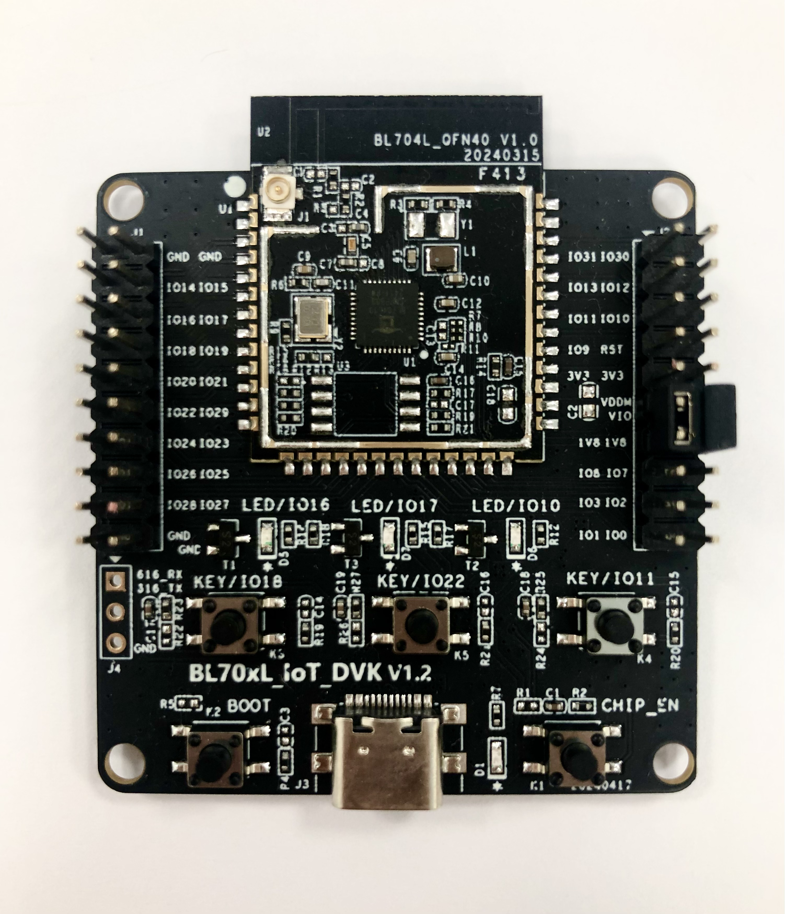

BL IOT SDK Development Guide
Overview
The BL702L/704L series chip, developed by Bouffalo Lab Technology, is a general-purpose microcontroller based on the RISC-V processor, with a main frequency of up to 128 MHz, ultra-low power consumption, and an array of rich peripherals. In addition, it supports BLE 5.0, Zigbee 3.0, and other functionalities, making it widely applicable in IoT and other low-power fields.
The BL IOT SDK is an IOT software development kit specifically designed for BL60X, BL70X, and subsequent chips from Bouffalo Lab. It supports Windows, Linux, macOS operating systems, and offers a rich set of examples to facilitate rapid IoT application development utilizing the BL series chips.
This document is focused on the Windows operating system, illustrating how to set up the development environment, compile example code, flash firmware, and debug through a simple example. It is aiming to help users quickly get acquainted with the BL70X IOT application development process. For more platforms and software usage, please refer to BL70xL Development Guide。
Preparation
Before starting this example, ensure your development environment includes the following components:
Hardware
BL70xL_IoT_DVK_V12 board
USB cable
PC (Windows OS)
Software
MSYS2 (Windows compilation, debugging tool)
BLDevCube (Firmware programming tool)
Hardware Connection
The BL70xL_IoT_DVK V1.2 development board integrates a BL616 chip for USB-CDC (UART) and JTAG conversion. There is no need to connect any additional hardware. Through the USB interface on the development board, users can achieve all functions such as software flashing, serial communication, and online debugging of the BL70xL chip.

BL70xL_IOT_DVK V1.2

USB Interface
{kind=link}
Software Installation
Before initiating the project compilation, confirm that all tools are correctly installed.
重要
Please pay attention to environment variable settings, driver configurations, and other relevant information in the document to prevent operational errors.
1. Establishing the Compilation Environment
Obtain the MSYS2 installation package and installation steps
Open MSYS2 and install make, then enter the command:
pacman -S make, and follow the prompts until the installation is completed

2. Setting Environment Variables
To compile using gcc, add gcc to the MSYS2 environment variable. The method is as follows:
1.(Recommended) Add the following instructions to the MSYS2 startup file home/xxx/.bash_profile:
export PATH=/yyy/zzz/toolchain/riscv/MSYS/bin:$PATH2.(Not recommended, need to repeat this operation every time MSYS2 restarts) In the MSYS2 command line, directly enter the following command:
PATH=/yyy/zzz/toolchain/riscv/MSYS/bin:$PATHNote: Replace above 'yyy' and 'zzz' with the actual path to your gcc installation, for example
PATH=/d/Work/Code/bl_iot_sdk/toolchain/riscv/MSYS/bin:$PATH
Compiling the Project
This section explains how to compile the bl702l_demo_ble_peripheral project under the customer_app directory.
Open the MSYS2 platform and enter the local bl_iot_sdk/customer_app/bl702l_demo_ble_peripheral folder
Command:
cd /c/bl_iot_sdk/customer_app/bl702l_demo_ble_peripheral/
Execute the script genblem1s1p to initiate the compilation process:
Command:
./genblem1s1p
Upon successful compilation, a
build_outwill be created containing the following files:
**bl702l_demo_ble_peripheral.bin: ** Binary firmware for programming into the chip
**bl702l_demo_ble_peripheral.elf: ** Executable file for debugging software
**bl702l_demo_ble_peripheral.map: ** Map file for analysis of functions and memory usage
Bouffalo Lab Parse Tool For Windows is a map file analysis software provided by Bouffalo Lab team, which can be used for memory analysis

{kind=link}
Flashing Firmware
This section introduces how to use BLDevCube integrated development tool to program firmware into BL702L/704L DVK board.
1. Entering the Chip into Flashing Mode
1.1 Connect to the DVK board using a USB cable
First press and hold the
Bootkey on the boardThen press the
RSTkey on the board and release it; at this time the chip will enterUART programming modeFinally release the
Bootkey
2. Downloading Firmware with BLDevCube
2.1 Open
BLDevCube.exe, selectBL702L/704LfromChipdropdown menu, clickFinishand enter the main interface ofDev Cube2.2 Once in the main interface, you will be directed to the
IOTdownload interface by default
2.3 Configure BLDevCube
Configuration information includes:
Interface: It is used to select the communication interface for downloading, here select Uart.
Port/SN: When Uart is selected for downloading, here select the COM port connected to the chip, you can click the Refresh button below to refresh the COM port.
Uart Rate: When Uart is selected for downloading, fill in the baud rate, the default value is 2000000 bps.
Chip Erase: Choose whether to erase the entire Flash before downloading, the default setting is False.
Xtal: Select the crystal oscillator frequency when downloading, if the circuit board does not have a soldered crystal oscillator, select the internal RC32M.
Firmware information includes:
partition table: Use the partition table in the partition folder of the corresponding chip type under the Dev Cube folder, default select
...\chips\bl702l\partition\partition_cfg_1M.tomlfirmware: The path of bin file generated by user compilation
...\bl_iot_sdk\customer_app\bl702l_demo_ble_peripheral\build_out\bl702l_demo_ble_peripheral.bindts: Use the device tree in the device_tree folder of the corresponding chip type under the Dev Cube folder, default select
...\chips\bl702l\device_tree\bl_factory_params_IoTKitA_32M.dts
2.4 After correctly configuring the above settings, click
Create & Downloadto initiate the download process. A successful download will be indicated by a green status bar.
{kind=link}
{kind=link}
3. Running the Firmware
Open the serial port tool installed on the PC, select 2000000 baud rate
Press the
RSTkey on the DVK boardThe program is executed correctly, and the PC-side serial port tool will see the following print

注解
During the burning, if there are abnormalities such as unable to burn, burning failed, and no printing after burning successfully, refer to BL702 FAQ Summary .
Debugging Software
This section describes software debugging using the onboard CKLink debugger, along with the T-HeadDebugServer and GDB debugging environment.
重要
For the installation and debugging method of Freedom Studio + OpenOCD, please refer to OpenOCD
1. CKLink connection
CKLink is a RISC-V JTAG debugger developed by T-HEAD. The BL70xL_IoT_DVK V1.2 development board integrates a BL616 chip to achieve CKLink functionality.
In the factory state, the CKLink of BL70xL_IoT_DVK V1.2 development board is connected to the BL70xL JTAG interface. Upon connecting to a computer via USB, a device named
CKLink-Litewill appears inDevice Manager -> Universal Serial Bus devices, indicating a successful connection of CKLink.
注解
Different versions of BL70xL development boards have varying default debugger and JTAG connection status. Before use, please ensure the JTAG interface is correctly connected. For BL70xLIOTDVK V1.0 development board, please refer to :ref: BL70xL_DVK_V1.0
2. Install and configure T-HeadDebugServer
2.1 Download the latest version T-HeadDebugServer installation package from T-HEAD official website
2.2 Unzip the downloaded installation package, double-click Setup, and click next all the way. After the installation is complete, there will be a T-HeadDebugServer icon on the desktop
2.3 After connecting the JTAG pins of the board with the CKLink debugger, click the
trianglebutton, if it turns into acircle, it means that the JTAG connection is successful. If it fails, you need to check if the JTAG connection is correct
3. GDB Debugging
重要
bl702ldemoble_peripheral is a low-power product example. When entering low-power mode, the JTAG connection automatically disconnects. To demonstrate the debugging process, in this example, the code btble_pds_enable(1) will be modified to btble_pds_enable(0), which is used to prevent the device from entering low-power mode and disconnecting the JTAG connection.
3.1 Open the
MSYS2 MINGW64terminal, enterriscv64-unknown-elf-gdbcommand to start GDB:3.2 Input command
file build_out/bl702l_demo_ble_peripheral.elfto load the elf file:
3.3 Input command
target remote :1025to connect to the T-HeadDebugServer (1025is the default port of T-HeadDebugServer):

3.4 Input command
hb bleapp_connectedto set a hard breakpoint at the beginning of thebleapp_connectedfunction, then entercto continue debugging:
3.5 Use a "Master" device to scan and connect to the "Slave" device, and the GDB debugging environment will automatically break at the beginning of the
bleapp_connectedfunction.
Enter
btto print the backtrace of the current function call stack；Enter
p <变量名>to print the value of the variable；Enter
cto continue debugging；Enter
nto step to the next line；
3.6 Input command
qto quit GDB:
{kind=link}
Other Instructions
For more information on the use of other platforms and software, please refer to the BL70xL Development Guide。